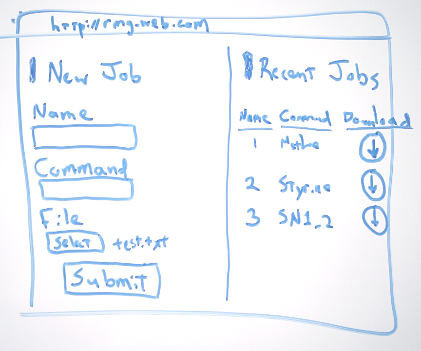

Upload Job
Result

Last time, we discussed some austere topics around blocking and asynchronous execution, and we may have started to feel like insurmountable piles of jargon stand between us and a working site, while our page still consists of just ugly input boxes and 90’s-looking text labels. Today we’ll let our right brain have some more fun.
We can start with paper and pencil. Dry-erase boards are great too, because we have some colored markers to work with, and the thick lines are nicer to look at.
Imagine your page, and take your time to draw what you see. Like writing1, drawing a draft forces a level of concreteness to your idea that can’t be gotten through imagination alone2. This isn’t just about the design - it’s also about discovering features.

When drawing the left half of this mock-up, it occurred to me that the page lacks any sort of feeling of continuity through time, so I added the ‘Recent Jobs section on the right. Without ’Recent Reactions’, it’s not clear to the user what will happen when they click ‘Submit’. Now, when we put a ‘Recent Reactions’ section on the page, we’re foreshadowing that submitting the job won’t throws us to a new page with a confirmation number - no. Instead we will see something much nicer - our results should appear on the right when they are ready, with a download link, among the other recently run jobs. Are you a visual creature? If so, drawing will probably help you find the right features for your project’s web presence.
How can we turn this sketch into a real page? We’ll start with the html.
<html>
<head>
<link href='https://fonts.googleapis.com/css?family=Roboto+Condensed:400,300'
rel='stylesheet' type='text/css'></link>
<script src="http://http://code.jquery.com/jquery-2.2.0.min.js">
</script>
<link rel="stylesheet"
src="https://maxcdn.bootstrapcdn.com/bootstrap/3.3.6/css/bootstrap.min.css"/>
<script src="https://maxcdn.bootstrapcdn.com/bootstrap/3.3.6/js/bootstrap.min.js">
</script>
</head>
<body>
<div class="content">
<div class="new-jobs">
<h1>Upload Job</h1>
<form name="input_form">
<div class="form-group">
<label for="job_name">Job name</label>
<input name="job_name" class="form-control"
placeholder="SN1 in Methane"
type="text"/>
</div>
<div class="form-group">
<label for="cmd">Command</label>
<input name="cmd" type="text"
placeholder="run-rmg"
class="form-control"/>
</div>
<div class="form-group">
<label for="File">Input File</label>
<input type="file"/>
</div>
<input type="submit" class="btn btn-default"/>
</form>
<div class="result">
<span>Result</span>
</div>
</div>
<div class="recent-jobs">
<h1>Recent Jobs</h1>
<table>
<tr>
<th>ID</th><th>Name</th><th>Download</th>
</tr>
<tr>
<td>1</td>
<td>Job</td>
<td><a href="#">
<span class="glyphicon glyphicon-download"
aria-hidden="true">
</span></a>
</td>
</tr>
<tr>
<td>2</td>
<td>Job 2</td>
<td><a href="#">
<span class="glyphicon glyphicon-download"
aria-hidden="true">
</span></a>
</td>
</tr>
</table>
</div>
</div>
</body>
</html>The first thing to notice is that we are linking to a Google Font (although not yet using the font anywhere on the page). We also link Twitter’s Bootstrap css library. css files are linked in to an html page just like javascript files. As we touched on earlier, their role is to describe the styling of page elements. Bootstrap provides a lot of great default styling as well as a collection of vector icons. The documentation is a nice read.
Already this produces a half-decent view, thanks to Bootstrap.
We still need to draw some nice bounding boxes and properly position divs next to (instead of below) one another.
We get all the results we’re looking for through css, as written below. There are too many css declarations to go through them all; instead, try to intuit what each does from the text, and by copying these files onto your computer and experimenting. This is not far from the most formal ways that real web developers learn css3.
Any attributes involving ‘flex’ will be hard to make sense of. These attributes refer to the flexbox layout.
#result {
height: 100px;
background: white;
border-radius: 10px;
border-style: 1px solid rgba(0,0,0,1);
}
.postcontent {
display: flex;
padding: 10px;
}
.new-jobs {
background: rgba(0,0,0,0.05);
padding: 10px;
flex-grow: 1;
}
.recent-jobs {
background: rgba(0,0,0,0.05);
padding: 10px;
padding-left: 30px;
padding-right: 30px;
border-left: 1px solid black;
width: 30%;
}
.recent-jobs table {
margin-top: 30px;
}
.recent-jobs table tr{
border-top: 1px solid rgba(0,0,0,0.1);
border-bottom: 1px solid rgba(0,0,0,0.1);
}
.recent-jobs table td {
padding: 5px;
margin: 10px;
font-family: 'Roboto Condensed', sans-serif;
font-weight: 300;
font-size: 14pt;
}
.recent-jobs table span {
display: table;
margin: 0 auto;
}
.btn-primary {
background-color: #9d9d9d;
border-color: #9d9d9d;
}
.btn-primary:hover {
background-color: #9d9d9d;
border-color: #9d9d9d;
}
h1 {
font-family: 'Roboto Condensed', sans-serif;
font-weight: 300;
font-size: 20pt;
border-left: 2px black solid;
padding-left: 10px;
}
label, th, input, span {
font-family: 'Roboto Condensed', sans-serif;
font-weight: 300;
font-size: 14pt;
}
th, td {
padding: 5px;
}
tr td:last-child {
text-align: center;
}
input {
font-size: 10pt;
}
a:hover {
text-decoration: none;
}If I may say so, it’s starting to look like it’s not even an academic project anymore! As you browse the web, try to start to recognize patterns and layouts that appeal to you, and imagine how they would be implemented in html and css. Users are strongly attracted to beautiful pages, and it feels great to find that someone is impressed with your design.
In the next and last installment, we will integrate this design prototype with a database, say a few words about deployment, and then turn you the student loose in the wide open world.
Simon Peyton-Jones describes in this video the effect that writing your ideas can have on the ideas themselves. A great watch for any researcher.↩
In Telsa: Inventor of the Electrical Age, Carlson describes the vivid hallucinations that haunted Nicola Tesla in his childhood. When Telsa learned to harness his hallucinations in adolescence, he was able to design complex new AC motor designs in perfect detail without the aid of any physical prototypes or drawings. That Telsa achieved incredible insights through imagination is indisputable, however when he attempted to build an actual motor, he was confronted with an avalanche of unanticipated technical details. His first attempt at a brushless AC motor for instance didn’t turn at all, because he made his wire windings around a piece of non-magnetizing brass. To make his design work, he had to jam a long steel file into the windings and twist it around in search of an orientation that would produce the correct magnetic field. Software developers and scientists will both be familiar with this semi-random form of engineering - jamming more than metal files in all kinds of places when we discover something doesn’t work the way it did in our mind’s perfect image.↩
Codeacademy provides a great, free css class, too.↩